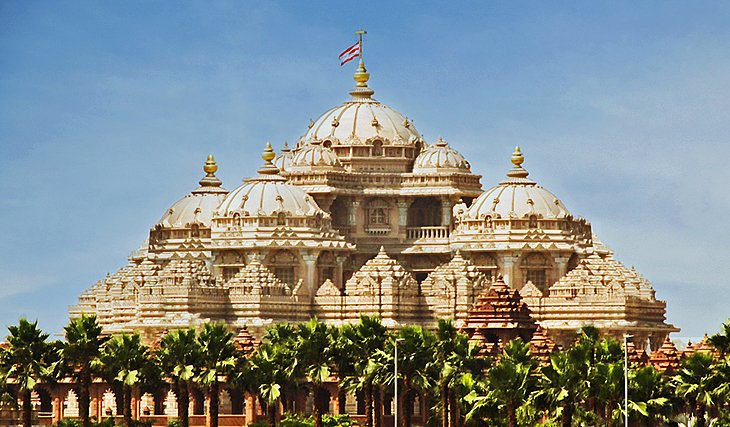
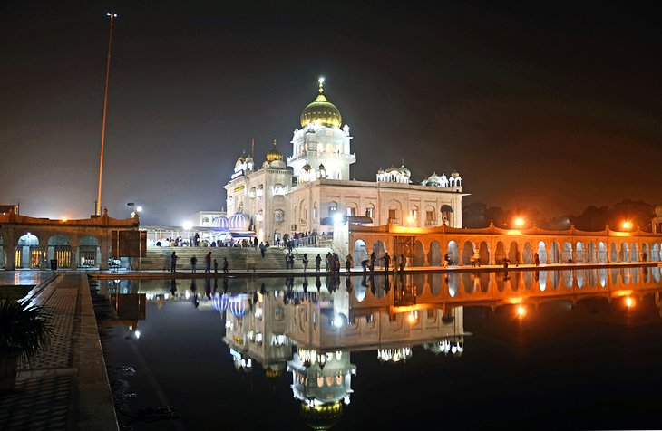

Humayun's Tomb

Being one of the most impressive structures in Delhi, the Humayun’s Tomb which is located conveniently at the banks of Yamuna River is a brilliant architectural splendor of the Mughal period. The Mausoleum is basically a tomb of the Mughal
Emperor Humayun which was built in the 1560s by Humayun’s eldest wife Bega Begum after his death. Today the tomb is a major attraction among the tourists visiting Delhi. Although the building of the Tomb has a complex structure but
it is the charm and grandeur of this imposing structure that attracts thousands of travellers every year across the globe.
Set in a lovely, large square garden, Humayun's Tomb is a lofty mausoleum constructed of white marble and red sandstone. It was designed as a prototype of the Taj Mahal in Agra and is an excellent example of Mughal architecture. Built
in the mid-16th century by Haji Begum as a memorial to her husband by Humayun's senior widow, the tomb is surrounded by lush formal gardens and other tombs including Humayun's barber and the Tomb of Isa Khan (the architect of the Taj
Mahal), a fine example of Lodi architecture and octagonal in shape. A fun thing to do is to try and catch a glimpse of this spectacular structure after nightfall when it's illuminated.
Visiting Humayun's Tomb one could see the beauty that depicts the true Mughal style of architecture, which was inspired from the Persian style of architecture. The tomb was even inscribed in the list of UNESCO World Heritage Site in the
year 1993 because of the brilliant architectural beauty. Also, the tomb is surrounded by beautiful lush Mughal garden which is divided into four parts by the pathways. Above all it is the various water channels for the fountains that
makes the Humayun’s Tomb a true architectural delight which is a treat to the eyes.
The Humayun’s Tomb was built after the death of the Mughal Emperor Humayun in 1555 AD. He was laid to rest at his palace at Purana Quila in Delhi. Following his death, to preserve the sanctity of their Emperor’s remains, the grieving queen
Bega Begum set out for Mecca to undertake the Hajj pilgrimage and vowed to build a splendid mausoleum in the memory of her husband Humayun. Several Persian architect were appointed out of which one was Mirak Mirza Ghiyas, hailing from
the Herat region of Afghanistan. Bega Begum did not only commission and paid for the construction of the tomb but supervised its construction as well. The construction of the magnificent and grand edifice involved around INR 1.5 million.
Akshardham Temple

Located in the heart of India i.e., New Delhi, Akshardham Temple is a marvel of architecture that unfolds the cultural legacy of thousands of years and is a tribute to Lord Swaminarayan (1781- 1830) who is the avatars, devas and great
sages of Hinduism. The construction of the grand structure took almost 5 years and was inaugurated on 6 November, 2005. Today the imposing structure is standing on the banks of the Yamuna River and attracts millions of tourists and
pilgrims across the globe.
Basically, the term Akshardham has been derived from two words 'Akshar' which means eternal and 'Dham' which means abode, which together means abode of divine or the eternal. Entering the temple, one could see the 11 feet high gilded image
of Bhagwan Swaminarayan that appears mesmerising. Visitors could feel each element of Akshardham echoing with spirituality that makes every soul potentially divine.
Travellers coming to see Akshardham Temple get fascinated by decoration of the temple which comprises minute carved deities, flower, fauna and musicians. The temple consists of 234 pillars, 9 domes, and twenty thousand statues of acharyas,
sadhus, and devotees. A visit to Akshardham Temple is a spirituality enriching experience. It is the beauty and magnificence of Akshardham Temple that makes it one of the must visit tourist attractions in Delhi.
The construction of Akshardham Temple was brainstormed by Yogiji Maharaj which was created by Pramukh Swami Maharaj, the former leader of BAPS (Bochasanwasi Akshar Purushottam Sanstha). Initially, the place for the construction wasn’t
decided and different places including Ghaziabad, Gurgaon, and Faridabad were suggested to the Guru but he stood firm to the dream of Yogiji Maharaj who wanted to get it constructed on the banks of the Yamuna River. So keeping this
in mind, Pramukh Swami Maharaj finally acquired an area of 30 acres on the banks of Yamuna and started with the construction process. The temple was consecrated on 6 November 2005 and today Akshardham Temple attracts around 70 percent
of all the tourists coming from across the globe to Delhi.
Witnessing the main temple, the other exhibitions takes the visitor to the additional sighting that includes the Yogi Hraday Kamal, which is a garden in the shape of lotus, the Nilkanth Abhishek, a place to offer abhishek which is a ritual
of pouring water in form of respect and prayers, the Narayan Sarovar which is a lake containing water from 151 different rivers that rims the temple, Premvati Ahargruh (restaurant which caters traditional vegetarian food) and more.
Gurudwara Bangla Sahib

Delhi's most important Sikh place of worship, the 18th-century Gurdwara Bangla Sahib is near Connaught Place and is well worth a visit. Highlights include its magnificent pool, the Sarovar, at the heart of this large complex, as well as
its famous gold dome and flagpole.
Also of note is the large temple building itself, along with its art gallery and a small museum dedicated to the history of the Sikh religion. Visitors are always welcome here, and an excellent meal is available at no cost in the large
Gurdwara Kitchen-all that is asked in return is your hair be covered and shoes removed.